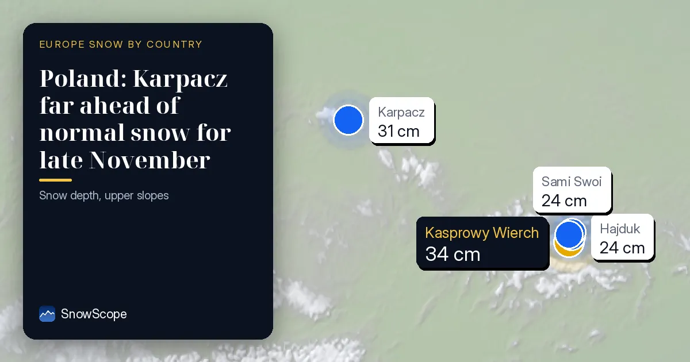
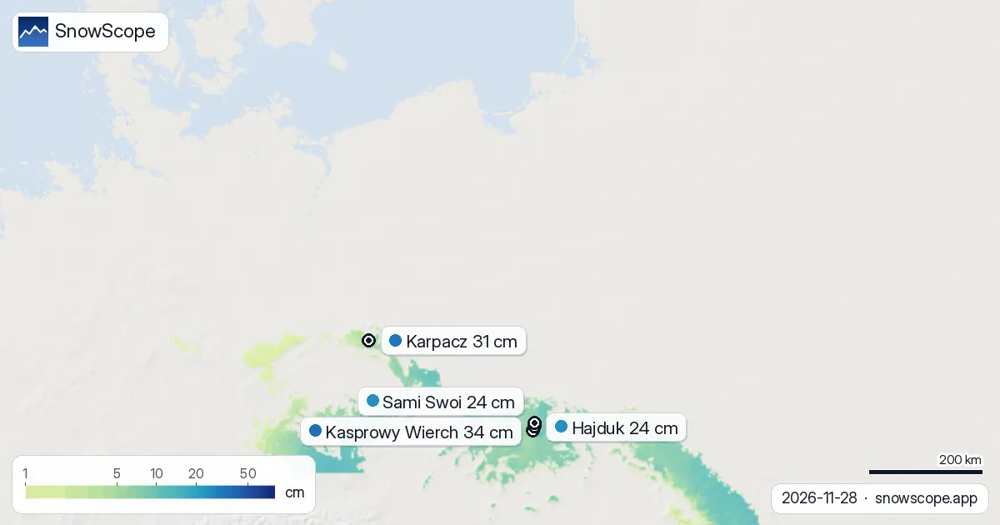
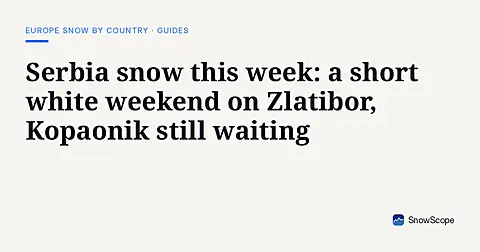

Poland: Karpacz far ahead of normal snow for late November
Poland's mountains are running far ahead of a normal year. Karpacz, in the Karkonosze range, sits at 31 cm—almost three times what you would expect to find here at the end of November—while the entire country has turned white in the past week.
See the live snow forecast for Kasprowy Wierch in the SnowScope appSnow depth, powder alerts and the 3D map, free.
How far ahead are we?
Karpacz is holding 31 cm of snow today, 28 November. For this date in a normal winter, you would find only 11 cm. That puts the resort at 282 per cent of what a typical late-November visit brings. This is not a fluke: Karpacz has seen 31 cm before at this time of year, but only in the best winters on record. The comparison tells a clear story. A week ago, the Karkonosze had just 22 cm. What changed in those seven days changed the entire picture for Poland.
| Resort | Today | Normal for the date | Share of normal |
|---|---|---|---|
| Karpacz | 31 cm | 11 cm | 282 % |

The turn came fast
One week ago, only 1,210 km² of Poland was white. Today, all 11,060 km² of the mapped region carries snow. That is a jump of 9,850 km² in seven days—a transformation. The Tatras, in the south, led the event: 12 cm fell in the past 72 hours there. Kasprowy Wierch, the range's highest point at 1,958 m, now sits at 34 cm. The Karkonosze to the north picked up 9 cm in the same window, and Karpacz gained 5 cm in the past three days alone.

Where the snow is deepest
Height matters, as always. Below 500 m, snow depth averages 7 cm and covers the ground completely. Between 500 and 1,000 m, you find 7 cm. Jump to 1,000–1,500 m and the depth reaches 10 cm. Above 1,500 m, the picture changes: snow sits at 26 cm on average across those higher slopes. The snow line now rests at 500 m, so almost everything has white on top. The best skiing will be on the high terrain, where the base is thickest.
What comes next
The next three days will bring little new snow to Poland—no more than 0 cm is forecast. But look further ahead: between 3 and 7 days from now, up to 7 cm is expected to fall. The real event will come around 3–4 December. SnowScope shows 4 cm arriving on 4 December, and the week after that (6–12 December) may bring as much as 27 cm. That second pulse of snow will cement a strong early-season foundation across the mountains.
How the resorts stand
Kasprowy Wierch leads the country at 34 cm, though it shed 1 cm since yesterday. Karpacz holds second place with 31 cm and no change expected in the next three days. Hajduk, Sami Swoi, and Stacja narciarska Suche all sit at 24 cm, having each picked up 6–7 cm in the past three days. Of Poland's 115 tracked resorts, 104 now carry measurable snow. No resort will gain new snow in the next 72 hours, but the period after that will shift the picture again.
What this means on the ground
Early-season snow is thin snow. At 7–10 cm on middle slopes, rocks can still catch an edge. The base at Karpacz—at 1,350 m—is thick enough to ski safely, but lower terrain will need care. The high slopes above 1,500 m are your safest bet for now. Neighbouring Slovakia has also turned white, with its leader, Vysoké Tatry, at 30 cm. Czechia lags a little: its highest point, Náprava, holds 29 cm and 78 per cent snow cover. The trend across the region is the same: an unusually strong start to the season.
Tips for skiers
- Ski above 1,500 m where snow depth averages 26 cm. Lower slopes carry only 7–10 cm and may have bare patches.
- Kasprowy Wierch (1,958 m) and Karpacz (1,350 m) are your safest choices right now for consistent white cover.
- The next significant snow arrives around 3–4 December and builds further in the week of 6–12 December. Plan your visit after that window for a thicker base.
- Early-season snow is hard and thin in places. Check the official avalanche bulletin for the Tatras and Karkonosze before heading off-piste.
- All tracked Polish resorts now have snow, but depth varies. Resorts above 1,350 m are most reliable this week.
About these numbers
Resort snow depths are the deepest snow on the resort's upper slopes on the date shown; they are estimates for an area, not a measurement at one point. Forecasts can change. Always read the official avalanche bulletin before going off-piste.
Cite this report
For research, teaching or the press: the numbers and charts are free to reuse under CC BY 4.0 with this citation.
SnowScope (2026), Poland: Karpacz far ahead of normal snow for late November, https://snowscope.app/blog/en/2026/11/poland-snow-ahead-of-normal-28-november-2026.html, accessed 2026-11-28
SnowScope (Atlas Labs). (2026, November 28). Poland: Karpacz far ahead of normal snow for late November. SnowScope snow reports. https://snowscope.app/blog/en/2026/11/poland-snow-ahead-of-normal-28-november-2026.html
BibTeX
@misc{snowscope2026polandsnowaheadofnormal2,
author = {{SnowScope (Atlas Labs)}},
title = {Poland: Karpacz far ahead of normal snow for late November},
year = {2026},
month = nov,
howpublished = {\url{https://snowscope.app/blog/en/2026/11/poland-snow-ahead-of-normal-28-november-2026.html}},
note = {Published 2026-11-28 12:18 UTC; accessed 2026-11-28}
}· CC BY 4.0 · Methods, data and tools →
Kasprowy Wierch: snow and temperature by height, this winter vs last (tools) →
Follow Kasprowy Wierch
Free: a message when fresh snow is coming, and the forecast every morning.
More snow reports

Tornik on Zlatibor had up to 39 cm on its upper slopes on 15 November 2026; by Wednesday it had melted. Kopaonik barely turned white. The week day by day and what comes next.

Savin Kuk above Žabljak picked up 22 cm of snow from 13 to 19 November and still has 6 cm today. Kolašin 1450 and 1600 are bare. The week day by day, and the next chances.

Only Borovets and Bansko have a trace of snow at the top today, 2 cm each. A week ago Borovets had 11 cm. Day by day, and the one snowy day in the forecast.